Culture at the Olympic Games
The Cultural Olympiad is the Games' least understood programme, and the one I have followed longest. Since 1999 I have studied how the Olympic Games use arts and culture, and what that leaves behind for host cities and for the Olympic Movement.
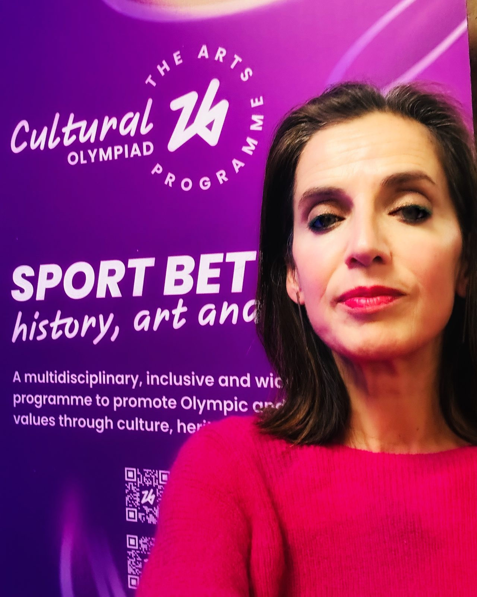
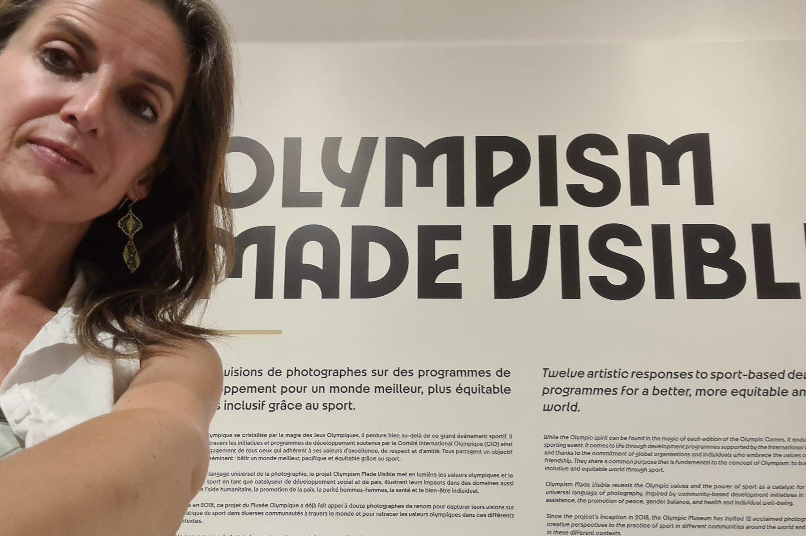
Why it matters
Every Olympic host city stages a cultural programme. The question is what it is for.
Art has been part of the modern Games since the art competitions of 1912. Today every host city runs a Cultural Olympiad, often over four years, as Barcelona first did for 1992. My work asks what these programmes achieve: for artists and audiences, for the host city's image and cultural policy, and for the Olympic Movement's idea of itself.
I wrote my PhD and a book on the Sydney 2000 Olympic Arts Festivals, directed the Cultural Olympiad evaluations for London 2012 and Paris 2024, and edited the evaluation report on the Milano Cortina 2026 Cultural Olympiad. At the International Olympic Committee I sat on the Culture and Olympic Heritage Commission from 2015 to 2026, have been a culture advisor since 2019, and served on the Olympic Studies Centre's research grant selection committee.
Edition by edition
Newest first
| Games and years | What I did | What came of it |
|---|---|---|
| Milano Cortina 20262026 | Edited the evaluation report on the Cultural Olympiad for the organising committee | Culture Programme: The Milano Cortina 2026 Cultural Olympiad Experience: more than 500 projects and 1,700 organisations across Italy, reaching around 12 million participants · Read the report · Notes from the Games |
| Paris 20242022–2024 | Directed the Cultural Olympiad evaluation for Paris 2024's culture directorate | Evaluation of 2,596 labelled projects across France and its territories, October 2024 · Read the report · en français |
| Tokyo 20202016–2021 | Followed the Cultural Olympiad from its 2016 launch through the postponement of the Games | Essays on the postponement and on the "impossible Olympic festival city" · Tokyo in the archive |
| PyeongChang 20182018 | Fieldwork on how Korea's cultural aspirations met the Olympic Movement's idea of culture | Fieldwork notes · Culture diary |
| Rio 20162016–2017 | Visiting Professor, University of São Paulo; British Academy Newton Fund study with São Paulo and Aberje | Did the Games help or hinder the image of Brazil as a creative nation? · The project |
| London 20122004–2013 | Advised the bid's Culture and Education committee; then directed the Cultural Olympiad evaluation for LOCOG, Arts Council England, DCMS and Legacy Trust UK | The first national evaluation of a Cultural Olympiad · Final report · Summary |
| Beijing 20082008 | Fieldwork at the Olympic arts festivals, embedded as a journalist in the Non-Accredited Media Centre | The project |
| Athens 20042004 | British Academy study, with Andy Miah, of non-accredited media centres and the host city | From Athens 2004 to London 2012 |
| Sydney 20001999–2002 | PhD on the Sydney 1997–2000 Olympic Arts Festivals, Universitat Autònoma de Barcelona | The thesis (2002) and the book The Olympic Games and Cultural Policy (Routledge, 2012), built around the Sydney 2000 Olympic Arts Festivals |
In the field
Fieldwork at the Games, from Sydney 2000 to Milano Cortina 2026.
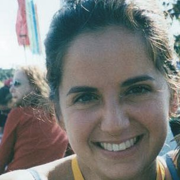
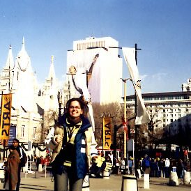
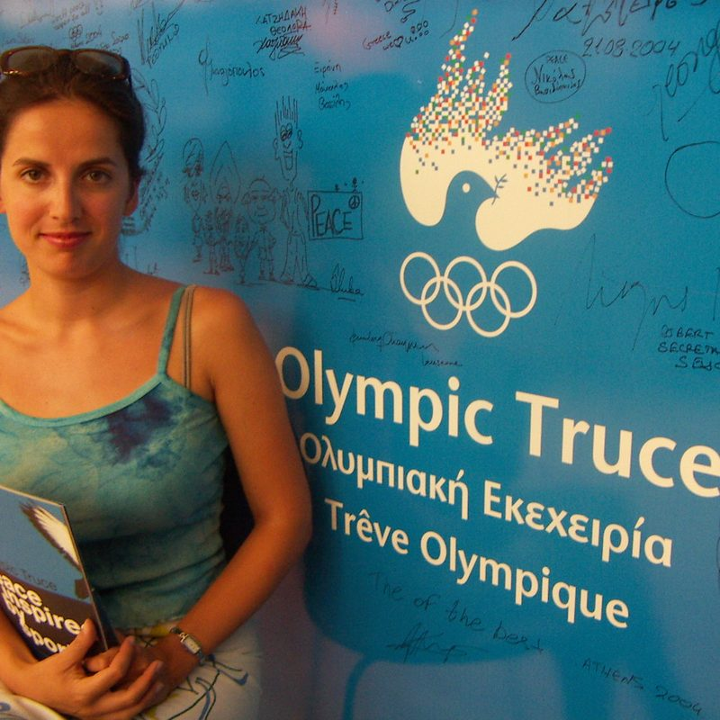
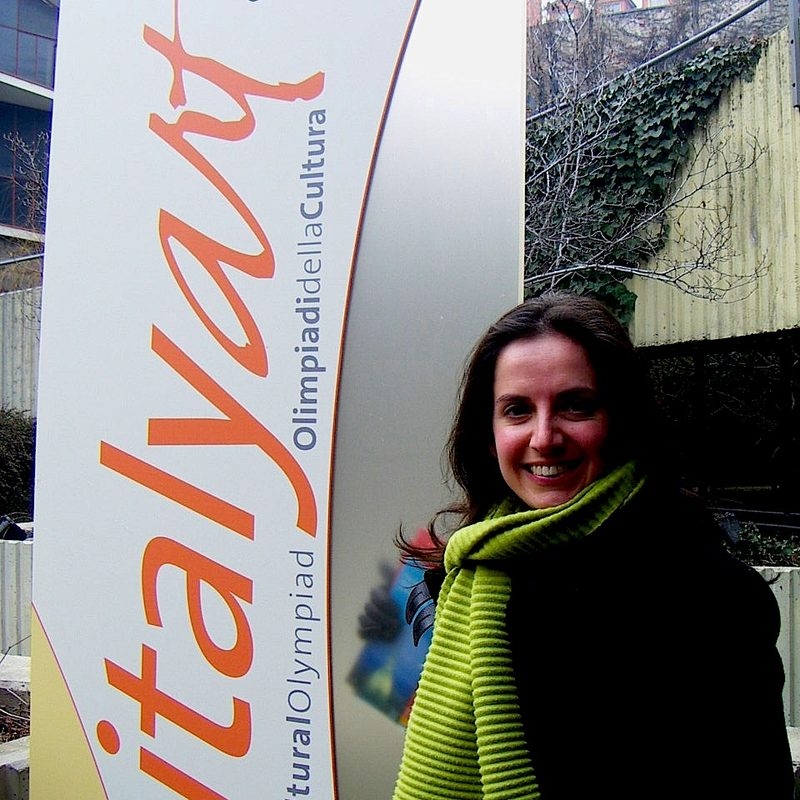
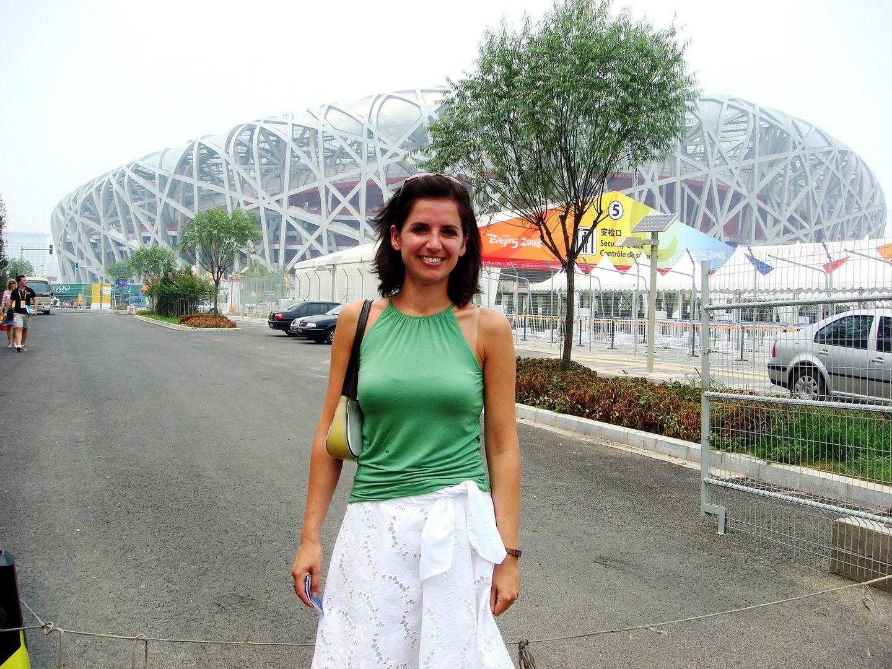
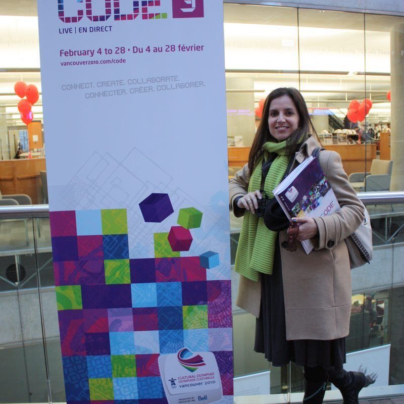

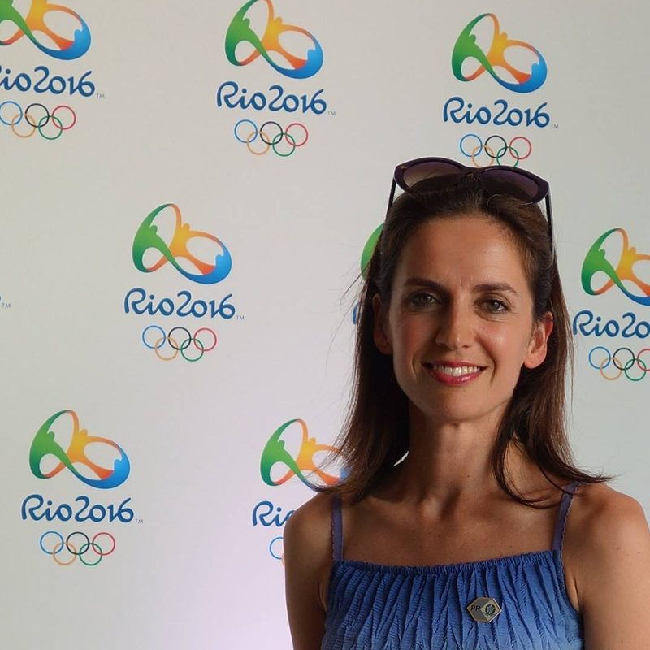
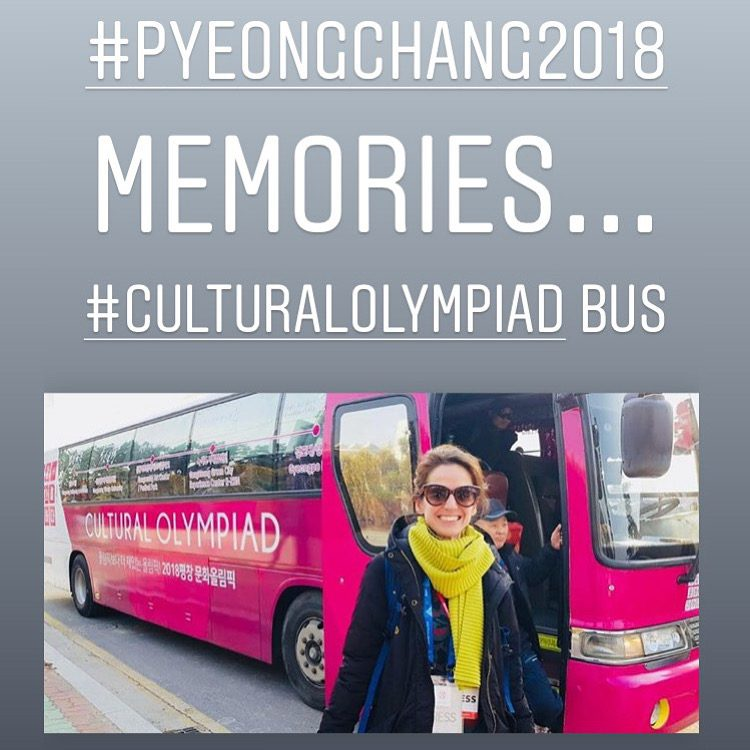
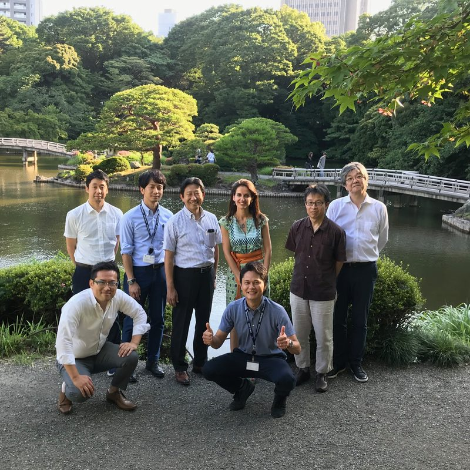
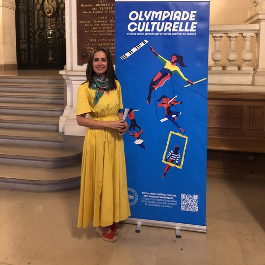
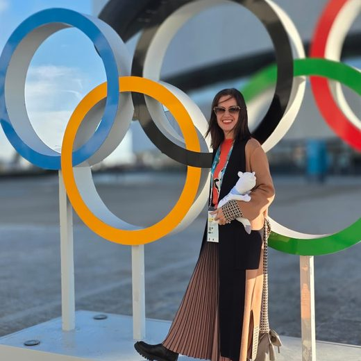
PyeongChang photo: Andy Miah
The Olympic Movement
Inside the rules for Olympic culture
Alongside the host cities, I work on the Olympic Movement's own cultural policy: how the International Olympic Committee frames culture, what it asks of host cities, and how what one Games learns reaches the next.
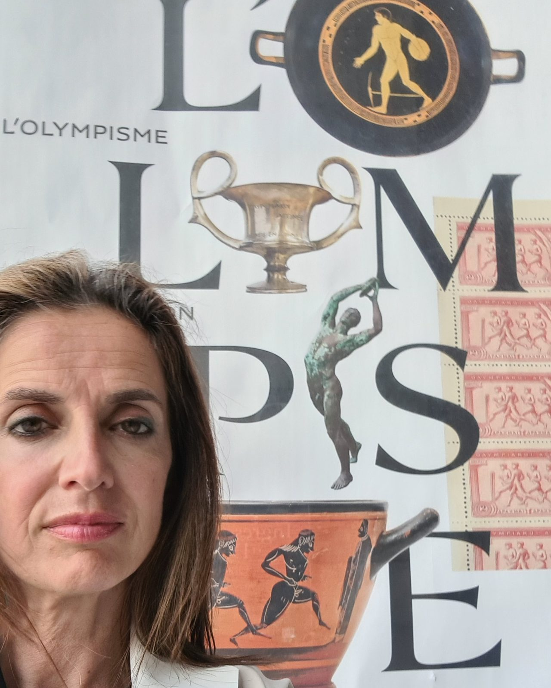
Publications on Olympic culture
57 items, newest first in each group · links open the full text or the library record where one is online
Books 3
- 2012The Olympic Games and Cultural Policy. Routledge. With an in-depth study of the Sydney 2000 Olympic Arts Festivals.
- 2012The Olympics: The Basics, with Andy Miah. Routledge. Russian edition, Russian International Olympic University, 2013.
- 2002Towards a Cultural Policy for Great Events: Local and Global Issues in the Definition of the Olympic Games Cultural Programme. Lessons from the Sydney Olympic Arts Festivals (1997–2000). PhD thesis, Universitat Autònoma de Barcelona.
Reports 11
- 2026Culture Programme: The Milano Cortina 2026 Cultural Olympiad Experience, editor. Fondazione Milano Cortina 2026.
- 2024Cultural Olympiad Evaluation: Paris 2024 (en français). Paris 2024 Organising Committee.
- 2024The Cultural Olympiad, Art and the Olympic Games. The Olympic Studies Centre.
- 2018The Value of Global Cultural Policy-Making: Building Bridges. IOC Advanced Olympic Research Grant Programme.
- 2014The Cultural Olympiad: Challenges and Ways Forward. International Olympic Committee.
- 2013London 2012 Cultural Olympiad Evaluation: final report, executive summary and technical appendices. Institute of Cultural Capital, for Arts Council England and partners.
- 2013Reflections on the Cultural Olympiad and London 2012 Festival, with R. Mackenzie. Arts Council England.
- 2012The Cultural Olympiad: The UK-wide Picture.
- 2011The London 2012 Cultural Olympiad: A New Model for Nation-wide Olympic Cultural Legacy. University of Liverpool.
- 2003Recommendations for the Programming, Management and Promotion of an Olympic Cultural Programme, special report. Centre for Cultural Policy Research, University of Glasgow.
- 2001Research on the Cultural Policy of the Olympic Movement: A Review of Cultural Agendas and Structures in the IOC. Universitat Autònoma de Barcelona, for the IOC Olympic Studies Centre.
Journal articles 6
- 2023Philippe Blanchard (former IOC Information Director) in conversation. Cultural Trends.
- 2022The Olympic Movement and cultural policy: historical challenges and ways forward. Journal of Olympic Studies.
- 2014The Olympic Games cultural narrative: ceremonies, Cultural Olympiads and Look of the Games as platforms to project the host city and nation. Russian International Olympic University Herald.
- 2014Editor, special issue on the Cultural Olympiad, with an editorial. Cultural Trends 23(1).
- 2008One hundred years of cultural programming within the Olympic Games (1912–2012): origins, evolution and projections. International Journal of Cultural Policy.
- 2001Enhancing sport marketing through cultural and arts programs: lessons from the Sydney 2000 Olympic Arts Festivals. Sport Management Review.
Book chapters 10
- 2024Cultural Olympiads. In Olympic Cities, Gold and Gold (eds), new edition. Routledge.
- 2020Arts and culture in the Olympic and Paralympic Games. In Routledge Handbook of the Olympic and Paralympic Games.
- 2017The cultural policy of global events. In Routledge Companion to Global Cultural Policy.
- 2016Cultural Olympiads. In Olympic Cities, Gold and Gold (eds). Routledge.
- 2015Placing culture at the heart of the Games: achievements and challenges within the London 2012 Cultural Olympiad. In The London Olympics and Urban Development. Routledge.
- 2012The Cultural Olympiad. In Bidding, Delivering and Engaging with the Olympics, Girginov (ed). Routledge.
- 2011The cultural dimension of Olympic Games: ceremonies and Cultural Olympiads as platforms for sustainable cultural policy. In An Olympic Mosaic. Centre d'Estudis Olímpics (UAB).
- 2010Sydney 2000. In Olympic Cities, Gold and Gold (eds). Routledge.
- 2008We are the media: non-accredited media and citizen journalists at the Olympic Games, with Andy Miah and Tian Zhihui. In Owning the Olympics. University of Michigan Press.
- 2007Living the multicultural Olympic city: cultural policy and planning in the Sydney 2000 Olympic Games. In Olympic Cities. Routledge.
Papers and lectures 7
- 2010#media2012: citizen media as a platform for cultural representation at the Olympic Games.
- 2008The Cultural Olympiad: pylon of the Olympic Movement. University of Liverpool.
- 2008The role of arts and culture in the Olympic Games: from Olympic arts competitions to Cultural Olympiads. University of Liverpool.
- 2007Non-accredited media, Olympic Games and the host city, with Andy Miah.
- 2002Securing sustainable legacies through cultural programming in sporting events. University of Glasgow.
- 2001The concept of Olympic cultural programmes: origins, evolution and projection, also in Spanish. Centre d'Estudis Olímpics (UAB).
- 2000Comparative analysis of the Olympic cultural program, design and management of Barcelona '92 and Sydney 2000. University of Western Ontario.
Essays and commentary 20
- 2021Giant inflatables and flying dancers: Olympic art has always turned heads. The Conversation.
- 2021Cultural programming at Tokyo 2020: the impossible Olympic festival city. Olympic Analysis.
- 2020Olympics postponement may be a cultural opportunity for Tokyo. The Conversation.
- 2020When the Games can't go on. Arts Professional.
- 2016Why art needs to retake the Olympic stage. The Conversation.
- 2016The cultural legacy is as important as the physical. Aberje.
- 2016The Olympic Games' varied layers of cultural programming. Research Beyond Borders.
- 2016What counts as #OlympicArt during the Rio 2016 Olympic Games? Culture @ the Olympics.
- 2016Sites for culture and art in the Olympic city. Culture @ the Olympics.
- 2016Olympic artists in residence. Culture @ the Olympics.
- 2016Think broccoli? Think again: the extraordinary work of Burle Marx. Culture @ the Olympics.
- 2012Striking a chord, also in French. Olympic Review 83.
- 2008Beijing cultural festivals… bigger but not always better. In Beijing 2008: Academic Views of the Event. Centre d'Estudis Olímpics (UAB).
- 2006Ever decreasing circles: the profile of culture at the Olympics, with Andy Miah. Locum Destination Review 18.
- 2005Taking part: participating in the London Games through sport, arts and education. MailOut.
- 2004More than a game: the value of Olympic arts programming to increase local participation. MailOut.
- 2004La dimensión cultural de macro-eventos en el 2004: potenciales y limitaciones para una experiencia sostenible. Boletín Gestión Cultural 6.
- 2002The Olympics is not a sporting event! Arts and culture in the 2002 Winter Olympics, with Andy Miah. theory.org.uk.
- 2000Olympic ideals and Disney dreams: opportunities and constraints for cultural representation during Sydney's Opening Ceremony, with Andy Miah. Social Science and Sports News, Human Kinetics.
- 2000Olympic arts festivals and the visual arts. National Association for the Visual Arts.
Many of these are held in the IOC Olympic World Library. Short essays on Olympic culture also appear in Culture @ the Olympics. Archive lists: journal articles · book chapters · reports · magazines
Talks
Speaking →International Olympic Committee, Lausanne · International Olympic Academy, Ancient Olympia · Olympic Games Research Fora · London 2012 Organising Committee · SportAccord · City of Oslo · Generalitat de Catalunya · University of Oxford · University of Chicago · University of Toronto · University of Lausanne · Ohio State University · ArtGames, Montreal
Selected platforms. More on speaking.
Watch
- Overview of Rio 2016Dukascopy TV, 2016 ↗
- ArtGames launch during the Rio 2016 Olympic GamesArtGames, 2016 ↗
In the media: The New York Times on the LA28 Cultural Olympiad (2025), and earlier The Guardian, The Scotsman, The Herald, The Sydney Morning Herald and The Australian.
Writing
Euphoric Cities essays and posts from the archive, newest first
Planning a Cultural Olympiad?
From the first concept to the evaluation and the legacy report. Tell me what you are planning and when, in English, Spanish, Catalan or French.
Other research themes
All research →Forty years of the programme, from Glasgow 1990 and Liverpool 2008 to Nikšić 2030.
Open the theme → Cities, placemaking and regenerationCulture-led regeneration, city branding and creative clusters.
Open the theme → Festivals and major eventsCommonwealth Games, Cities of Culture, festivals and their legacies.
Open the theme → Evaluation and cultural valueFrameworks for measuring what culture does, from Impacts 08 to the Culturometer.
Open the theme →